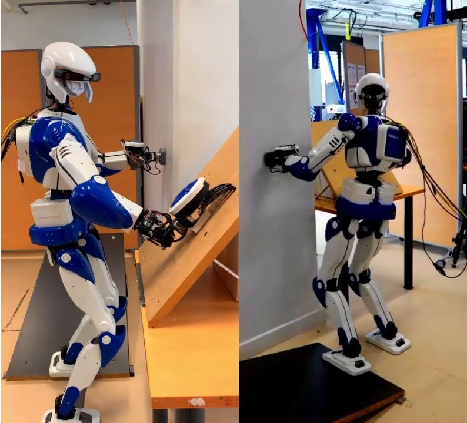
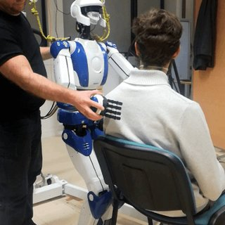
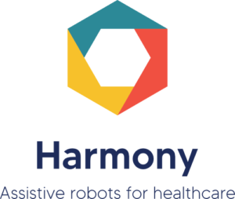
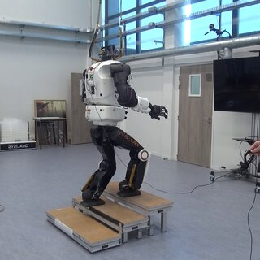

Selected Projects
The projects are mainly reflecting the works in following fields
- Whole-Body Balance Control of Humanoids
- Human-Robot Interaction
- Motion Planning
- Software Integration
- Autonomy in Healthcare Systems
The projects are mainly reflecting the works in following fields

This project introduces a control strategy for humanoid robots to handle dynamic transitions between fixed and sliding contacts. It employs the Chebyshev center for real-time balance optimization, enabling tasks like co-wiping and shuffling on uneven surfaces.

This project introduces the "Two-Touch Kinematic Chain Paradigm" (2TKCP), a framework for intuitive touch-based manipulation of humanoid robots. Using capacitive and force-torque sensors, the robot interprets user intentions to allow direct joint and whole-body control. The method simplifies robot interaction for non-experts, enabling accessible physical manipulation and task control.

Developed a bilevel Model Predictive Control (MPC) framework for dual-arm mobile manipulators that combines fast, adaptive task-space planning and compliant whole-body motion generation using Bezier curve parameterization. The system was validated through real-world experiments, demonstrating capabilities in dynamic obstacle avoidance, narrow-space navigation, and robust dual-arm manipulation.

These projects focus on advancing motion planning for humanoid robots in dynamic and uneven environments. The first introduces a novel N-step algorithm to compute all possible footstep plans for robots, enhancing reliability in locomotion tasks. The second develops efficient real-time multicontact motion planning through two approaches: MF-RHP, leveraging relaxed dynamics for computational efficiency, and LG-RHP, guided by learned intermediate goals. Both methods were validated through simulations and experiments, demonstrating effective planning for robots like Talos.

This project develops an autonomous wheelchair and healthcare application to enhance mobility and safety for individuals with mobility challenges. The system uses advanced navigation, SLAM, people detection, and NLP for seamless operation and user interaction. Designed for care homes and hospitals, it aims to improve accessibility, ensure safety, and reduce loneliness for the elderly and patients.